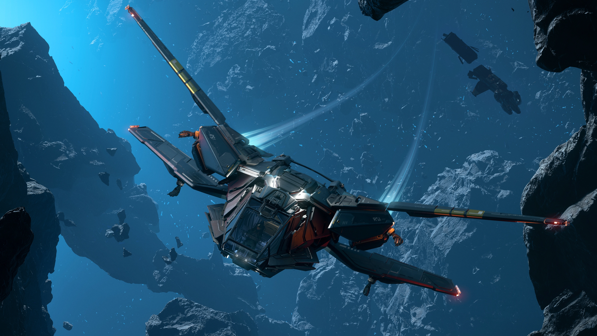
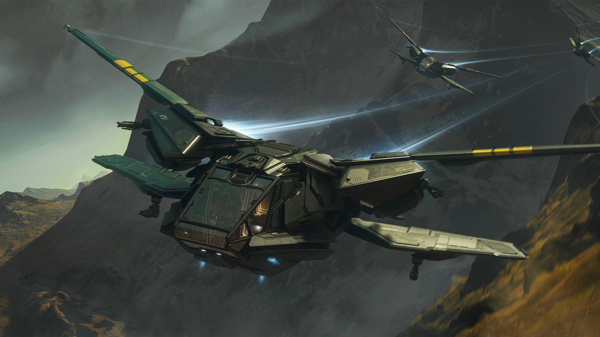

GENERAL
La Aurora Mk II es una pequeña nave multirol de arranque, fabricada por Roberts Space Industries. Los diseñadores han reinterpretado la nave clásica con una perspectiva renovada, rediseñando por completo la fiable Aurora desde cero. Esta nueva versión mejora el rendimiento, la usabilidad y la estética para una nueva generación de pilotos. También incluye módulos intercambiables, lo que permite una especialización sencilla sin limitar las trayectorias profesionales. Tanto si eres principiante como si eres un piloto experimentado buscando una mejora, el Aurora Mk II está listo para ti.Aurora MK II
MODULARIDAD
El Mk II ha sido diseñado para facilitar la fijación de módulos externos personalizados en la parte trasera del buque, permitiendo al vehículo concentrar su funcionalidad en requisitos específicos. Estos módulos pueden acoplarse y desacoplarse fácilmente usando solo un rayo tractor personal o a través del Gestor de Carga de Vehículos mobiGlas.
ARMAS
La nave está equipada con cuatro puntos duros de cañón tamaño 2 y cuatro puntos duros de misiles tamaño 2.
ALAS DE GEOMETRÍA VARIBLE
El Aurora tiene un diseño de cuatro alas con una configuración de barrida hacia atrás sobre el interior. Las alas inferiores más cortas cuentan con ventiladores VTOL para el vuelo estacionario y el aterrizaje. Todas las alas pueden plegarse hacia atrás para un perfil de aterrizaje compacto, similar a las alas del Aurora original.
ESPACIO INTERNO
El Mk II hereda el interior compacto del Aurora original, con un único acceso por babor que conduce al asiento del piloto, una terminal de ingeniería, una cama, un armario para trajes y estantes para armas/utilidad.
CARGA
El casco base cuenta con una bodega interna abatible de 2 SCU que puede almacenar contenedores de hasta 1 SCU. También hay dos estanterías internas que pueden albergar cada una un recipiente de 1/8 (0,122 SCU)
ALMACENAMIENTO
Dentro de la nave hay un espacio de almacenamiento interno que puede albergar hasta 1000k SCU de varios objetos. También existe un locker de trajes, aunque desde la Alpha 4.7.0 esta funcionalidad aún no se ha implementado.

RACKS DE AMRAS/UTILIDAD
Hay soportes internos que pueden albergar dos armas tamaño 2-4 (sin herramientas utilitarias), además de tres pistolas o pistolas mediadoras tamaño 1, así como tres herramientas utilitarias tamaño 1.
COMPONENTES DE FACIL ACCESO
Todos los componentes de la nave son fácilmente accesibles, incluidos los situados en la parte superior de la nave, a los que se puede acceder subiendo por la ventana de la cabina desde la parte frontal.
ESPECIFICACIONES TÉCNICAS
Especificaciones actuales de la nave y estas pordian cambiar mas adelante
Longitud
24,4m
Altura
8m
Ancho
27,7m
Velocidad
225 m/s
Armas
4x Talla 2
Misiles
4x Talla 2
Torretas
N/A
Carga